In this section, I explored how different text prompts and sampling hyperparameters affect image generation using diffusion models. Below are the prompts I initially created to generate prompt embeddings:
From this list, I selected three prompts for further experimentation:
For each prompt, I experimented with four different values of
num_inference_steps: 20, 60, 100, and 200, while fixing the random seed to 100.
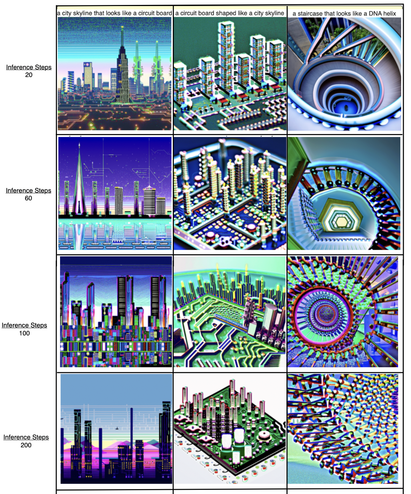
Effect of varying the number of inference steps for different prompts.
I observed that there appears to be an optimal number of inference steps. As the number of steps increases, the images initially gain more fine-grained detail. For example, between 20 and 60 steps, the staircase that looks like a DNA helix becomes more structured, with clearer helix-like patterns appearing along the railings. However, when the number of steps is increased to 200, the image begins to overemphasize local details at the expense of global structure. In this case, the staircase loses its recognizable form and no longer clearly resembles either a staircase or a DNA helix. A similar trend appears in the city skyline that looks like a circuit board prompt. At lower step counts (around 20), the image preserves a strong city skyline structure while subtly incorporating circuit-like details. As the number of steps increases, the model increasingly prioritizes circuit features, eventually losing the visual identity of a city skyline. Overall, when generating images designed to resemble visual anagrams, increasing the number of inference steps improves detail up to a point. Beyond that point, the model tends to overblend features from both concepts, causing the image to lose a coherent primary structure.
In the forward diffusion process, we start with a clean image \( x_0 \) and gradually add Gaussian noise at each timestep. The parameter \( \bar{\alpha}_t \) represents how much of the original signal remains at timestep \( t \). As \( t \) increases, \( \bar{\alpha}_t \) decreases, and the image becomes increasingly noisy.
The forward process is defined as:
\[ q(x_t \mid x_0) = \mathcal{N}\left(x_t; \sqrt{\bar{\alpha}_t} x_0, (1 - \bar{\alpha}_t)\mathbf{I}\right) \]
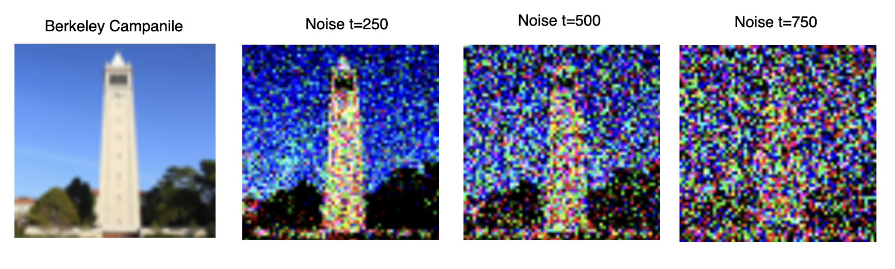
Visualization of the forward diffusion process over time.
To establish a baseline, I attempted to denoise the noisy images using classical Gaussian blur filtering. This approach assumes that noise primarily consists of high-frequency components, which can be reduced by averaging nearby pixels.
I used a Gaussian kernel with size 5 and a standard deviation \( \sigma = 1.5 \). However, this method performed poorly: although some noise was reduced, much of the original image structure had already been destroyed by the diffusion process and could not be recovered.
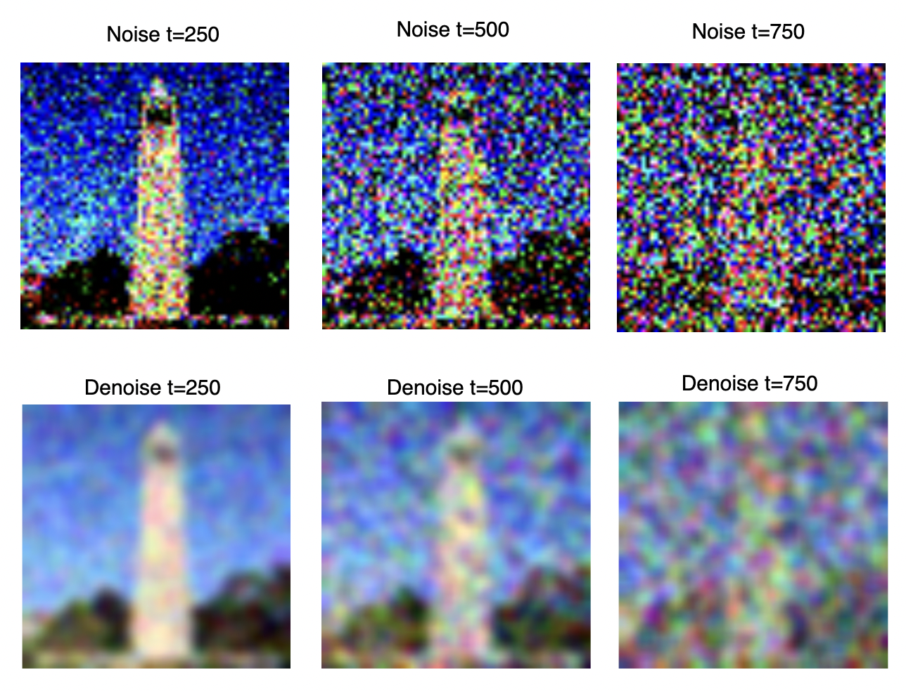
Results of classical Gaussian blur denoising.
In the next section, I implement a learned one-step denoising model that predicts the noise added at each timestep. We can remove this noise at each time step to try to recover our original image.
Forward process:
The UNet predicts the noise \( {\epsilon} \), so we can just solve for \( x_0 \) to remove the noise:
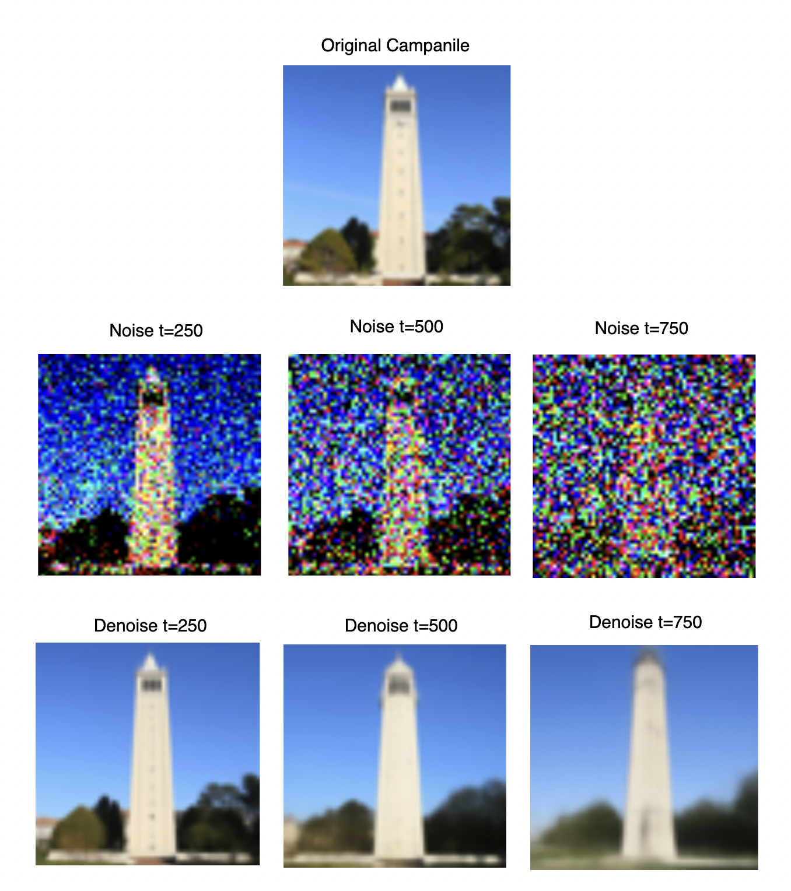
Results of One-Step Denoising
Instead of removing noise one tiny step at a time (e.g., over 1000 diffusion steps), we can jump between timesteps using a formula that mixes the current noisy image with an estimate of the clean image in the correct proportions.
In this setup, the first index corresponds to the noisiest image, while the final index corresponds to the reconstructed clean image. Rather than denoising at every single timestep, we use strided timesteps and perform denoising only at those selected points.
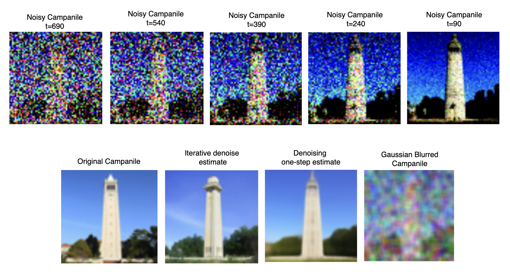
Results of iterative denoising using strided timesteps.
Iterative denoising was the method that kept the most detail compared to the one-step estimate and Gaussian blur. It was able to preserve information about the sky and had more detailed outlines of the trees compared to the one-step estimate.
However, it does seem to hallucinate the top of the Campanile and adds a flat surface. This makes sense, since during this process there is no reinforcement of whether the model is choosing the correct prediction of the clean image. If this estimate deviates from the true clean image, the subsequent steps will continue to drift further from the original.
In the previous section, iterative denoising was used to recover a clean image from
a noisy input. Here, we instead use the same iterative_denoise procedure
to generate entirely new images.
Rather than starting from a clean image and adding noise, we begin directly from
random Gaussian noise and set i_start = 0, corresponding to the noisiest
timestep. As in the earlier experiments, this aligns with
t=strided_timesteps[0] = 990.
Below are several images sampled from pure noise using the prompt "a high quality photo".
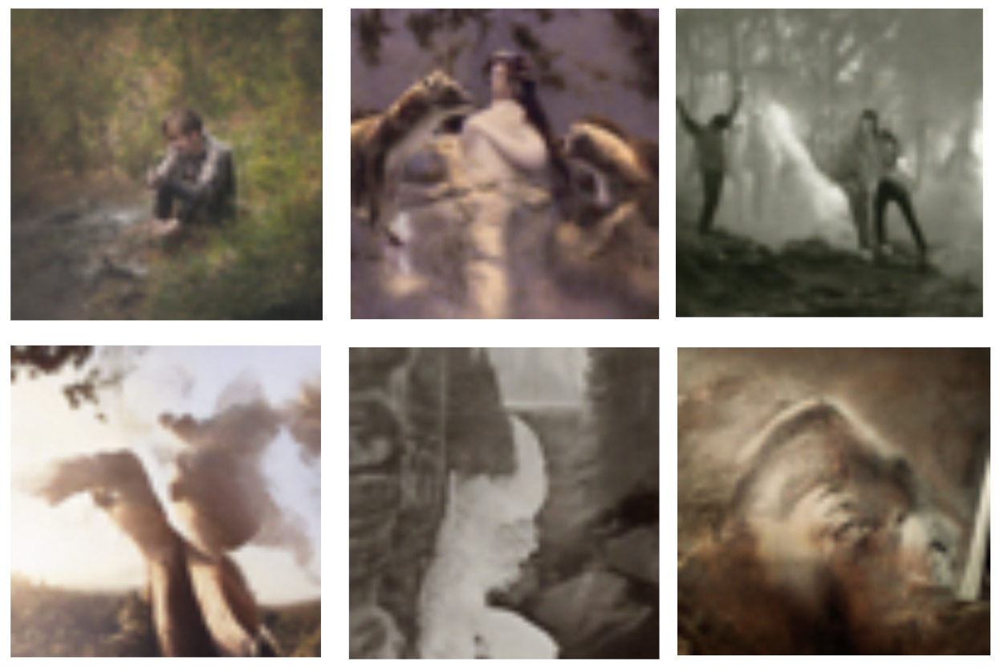
Images sampled from random noise using diffusion model sampling.
The images above were not the best, since some of them did not necessarily make sense. To improve the results, we use Classifier-Free Diffusion Guidance (CFG).
In CFG, we compute both a conditional noise estimate conditioned on the prompt and an unconditional noise estimate. The parameter \( \gamma \) controls the strength of the guidance:
The difference between \( \epsilon_c \) and \( \epsilon_u \) is the guidance vector. Intuitively, this guides \( \epsilon_u \) toward \( \epsilon_c \). The parameter \( \gamma \) controls how strongly the unconditional estimate is influenced by the conditional one. This can be thought of as injecting prompt-specific signal.
Here, we use "a high quality photo" as the conditional prompt embedding and an
empty string ("") as the unconditional prompt embedding.
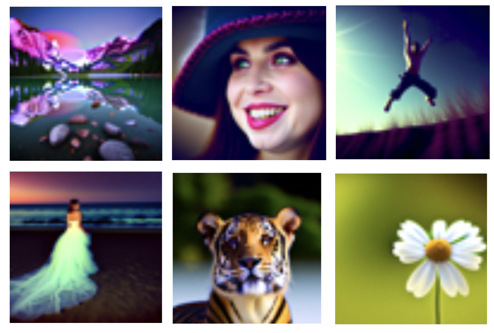
Image generation results using classifier-free guidance.
One way to think about denoising is that it forces a noisy image back onto the manifold of natural images. Here, we take the original Campanile image, add a small amount of noise, and force it back onto the image manifold without any conditioning.
Effectively, this produces an image that is similar to the Campanile, assuming the
noise level is low enough. We add noise to the Campanile image and then apply the
iterative_denoise_cfg function using starting indices
[1, 3, 5, 7, 10, 20].
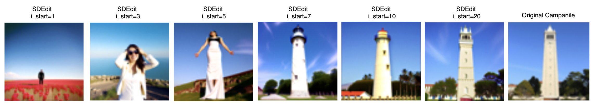
Image-to-image translation with different starting noise levels.
As i_start increases, the image becomes closer to the original Campanile.
This is because we are starting at a timestep closer to 0, where there is more image
signal and less noise.On the other hand, lower starting indices mean that we begin with a noisier image.
This gives the model more freedom to move around the image manifold. As the starting
index increases and the amount of noise decreases, the number of possible images that
fit the manifold is reduced, and the output increasingly resembles the Campanile.
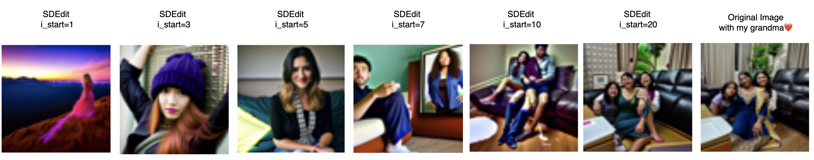
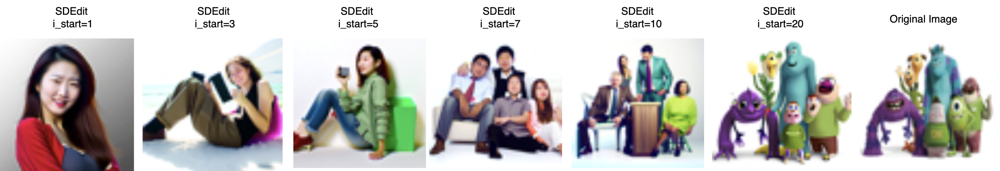
This procedure works particularly well if we start with a nonrealistic image (e.g. painting, a sketch, some scribbles) and project it onto the natural image manifold.
Here are couple web images edited using the above method for noise levels [1, 3, 5, 7, 10, 20]: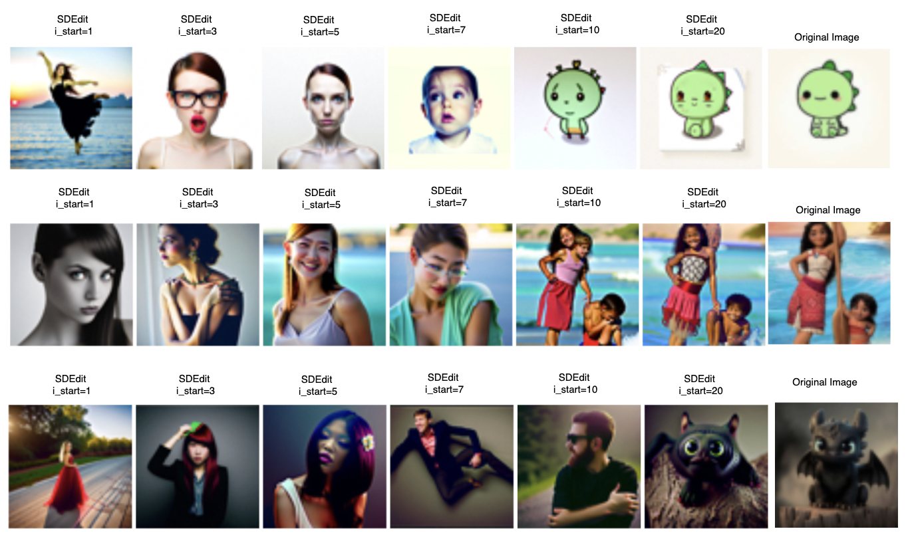
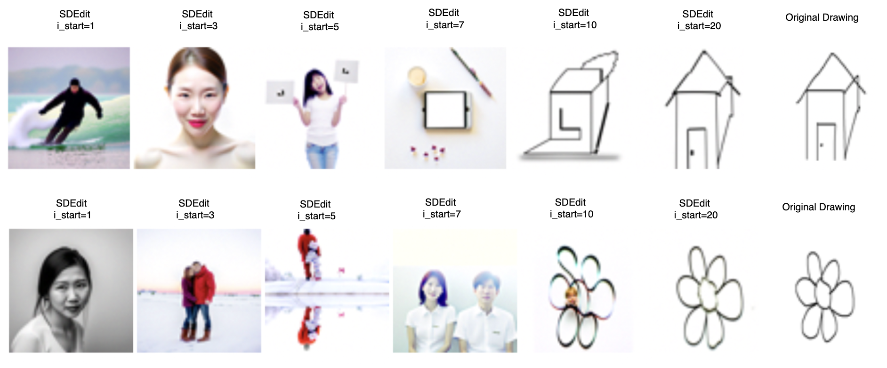
Here, we only allow the diffusion model to change pixels inside a mask, while forcing all pixels outside the mask to stay exactly the same as the original image (with the appropriate amount of noise).
We can use the same procedure to implement inpainting, following the RePaint paper. We run the diffusion denoising loop, but at every step, after obtaining \( x_t \), we force \( x_t \) to match the original image \( x_{\text{orig}} \) wherever the mask \( \mathbf{m} \) is 0:
Here, we use the prompt "a high quality photo".
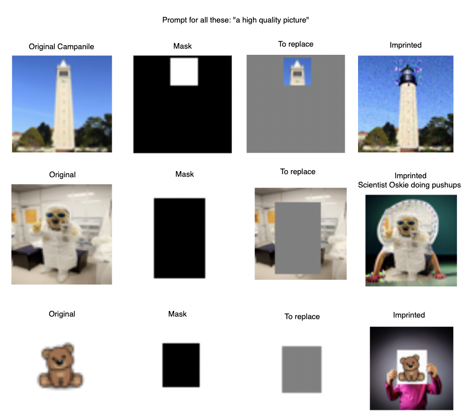
Inpainting results using a fixed mask.
Here, we do the same SDEdit-style image-to-image translation, but change the prompts
while keeping the same noise levels
[1, 3, 5, 7, 10, 20].
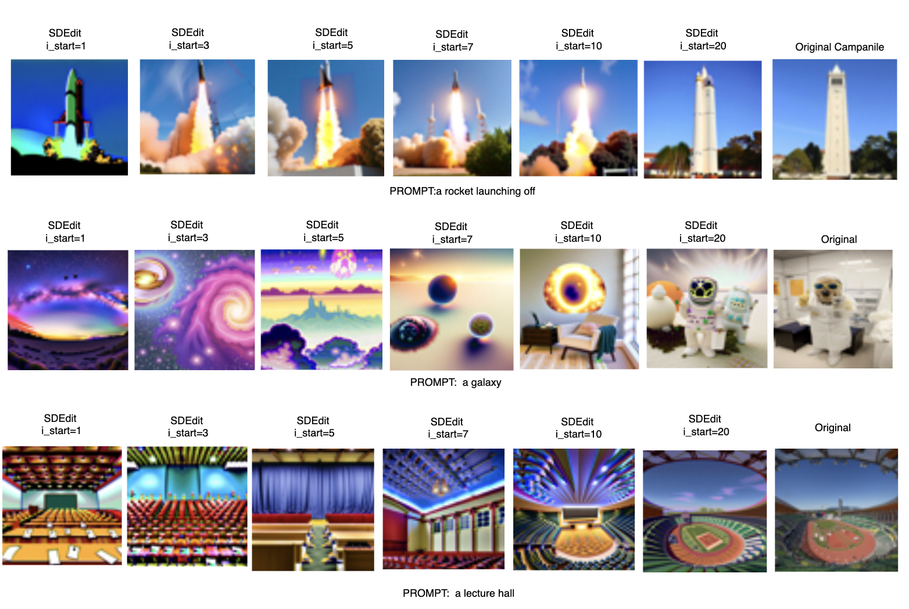
Text-conditional image-to-image translation at different noise levels.
Here, we create visual anagrams and optical illusions using diffusion models.
We denoise an image \( x_t \) at timestep \( t \) normally using prompt \( p_1 \), which gives a noise estimate \( \epsilon_1 \). At the same time, we flip \( x_t \) upside down and denoise it using a different prompt \( p_2 \), producing a second noise estimate \( \epsilon_2 \).
We then flip \( \epsilon_2 \) back, average the two noise estimates, and perform a reverse diffusion step using this averaged noise estimate.
The full algorithm is:
Here, UNet is the diffusion model from before, flip() is a function
that flips the image, and \( p_1 \) and \( p_2 \) are two different text prompt
embeddings. The final noise estimate used for denoising is \( \epsilon \).
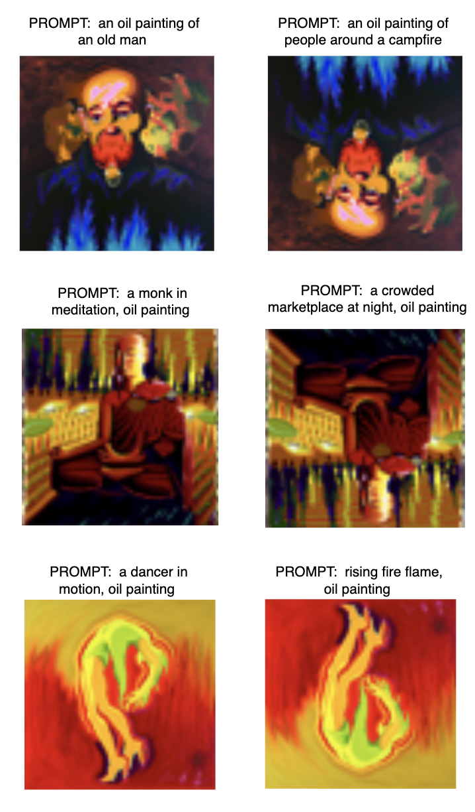
Visual anagrams generated using flipped denoising.
Here, we implement factorized diffusion and create hybrid images, similar to what we did in Project 2.
To create hybrid images with a diffusion model, we use a similar idea to the visual anagrams above. We construct a composite noise estimate \( \epsilon \) by estimating noise using two different text prompts and then combining low-frequency components from one noise estimate with high-frequency components from the other.
The algorithm is:
Here, UNet is the diffusion model UNet, \( f_{\text{lowpass}} \) is a low-pass filter, \( f_{\text{highpass}} \) is a high-pass filter, and \( p_1 \) and \( p_2 \) are two different text prompt embeddings. The final noise estimate used for denoising is \( \epsilon \).
We generate hybrid images by combining low-frequency components of the CFG noise prediction from one prompt with high-frequency components from another, and then using this combined noise estimate in the diffusion denoising process.
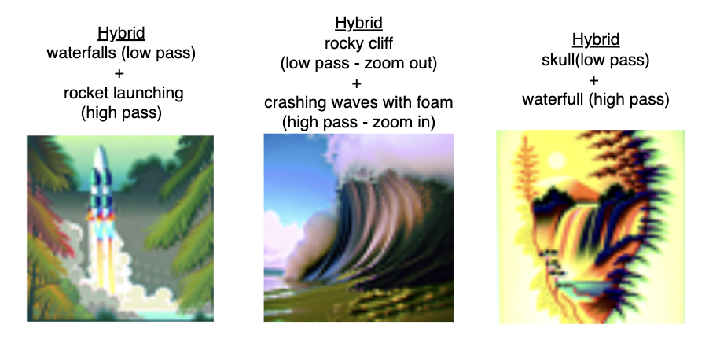
Hybrid images generated using factorized diffusion.
Given a noisy image, we aim to train a denoiser that maps it back to a clean image. To do this, we optimize an L2 loss:
To implement the unconditional UNet, I followed the architecture shown below:
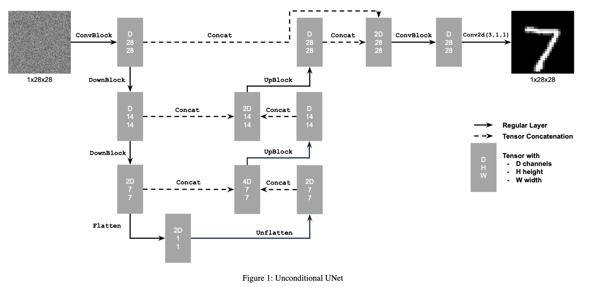
UNet architecture used for single-step denoising.
Below are the standard tensor operations used throughout the UNet:
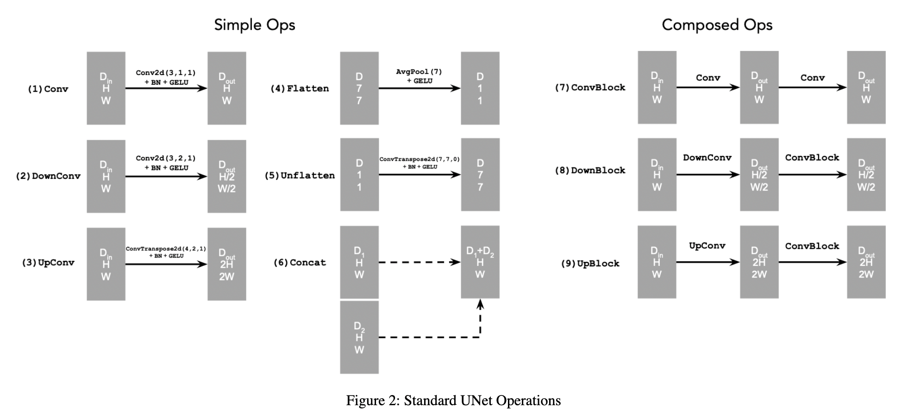
Standard tensor operations used in the UNet.
Here, I generated training data pairs of \( (x, z) \), where each \( x \) is a clean MNIST digit. For each training batch, we generate \( z \) from \( x \) using the following noising process:
Below is a visualization of the noising process for \( \sigma = [0.0, 0.2, 0.4, 0.5, 0.6, 0.8, 1.0] \). As \( \sigma \) increases, the amount of noise in each image also increases.
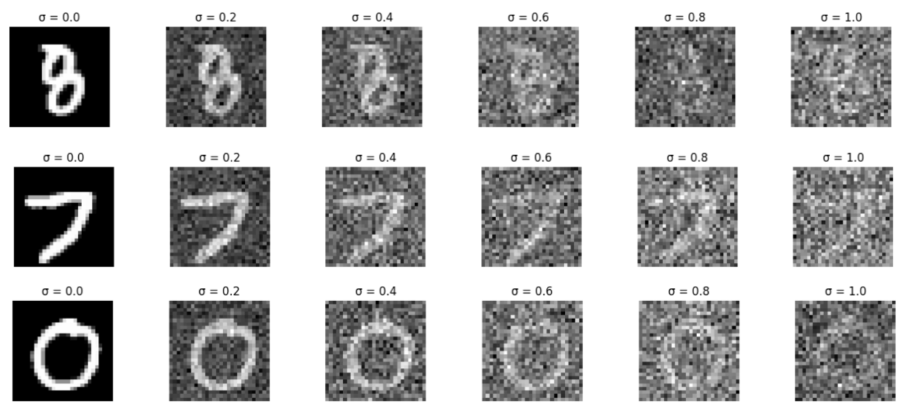
Visualization of the noising process at different noise levels.
Here, we train our model to perform denoising. Specifically, we denoise a noisy image \( z \) that has noise with \( \sigma = 0.5 \) applied to the original clean image \( x \).
The training curve is shown below:
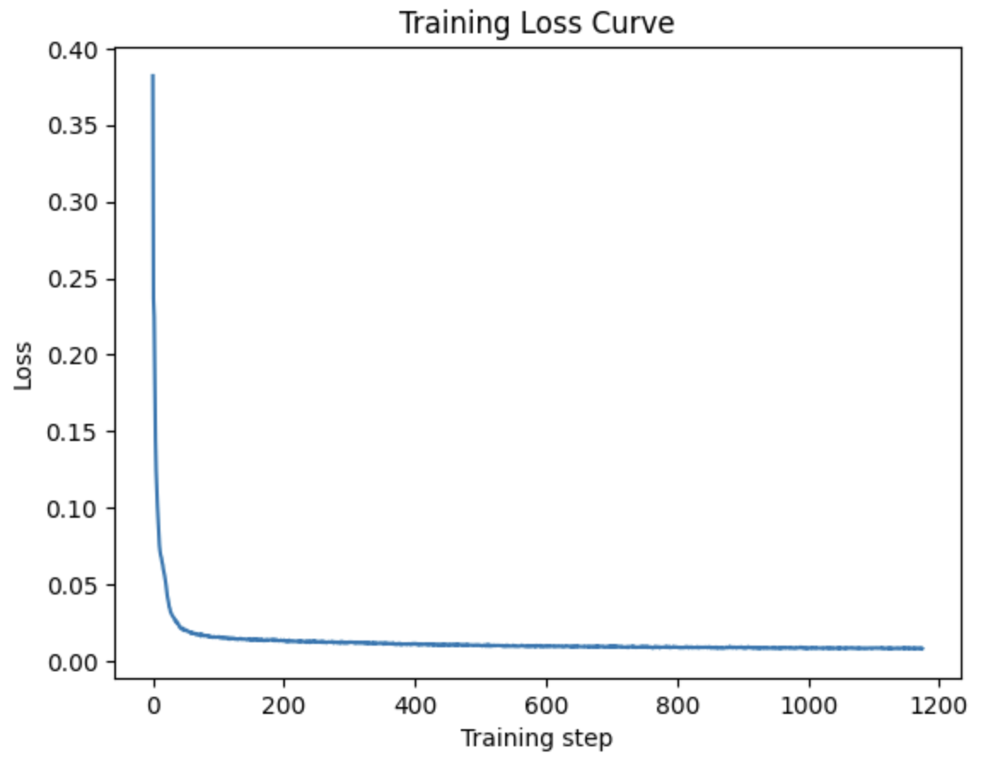
Training loss over time.
At each epoch during training, I also display the clean test images, the corresponding noisy images, and the denoised images produced by the model.
Below are sample results on the test set with noise level \( \sigma = 0.5 \) after the first and the fifth epochs:
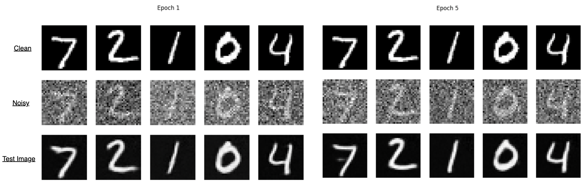
Sample denoising results after the first and fifth training epochs.
We now test the model on noise levels that it was not trained on, in order to evaluate its out-of-distribution (OOD) generalization ability. The model was trained using a fixed noise level of \( \sigma = 0.5 \), so here we evaluate it on \( \sigma = [0.0, 0.2, 0.4, 0.6, 0.8, 1.0] \), excluding the training noise level.
The results of this evaluation are shown below:
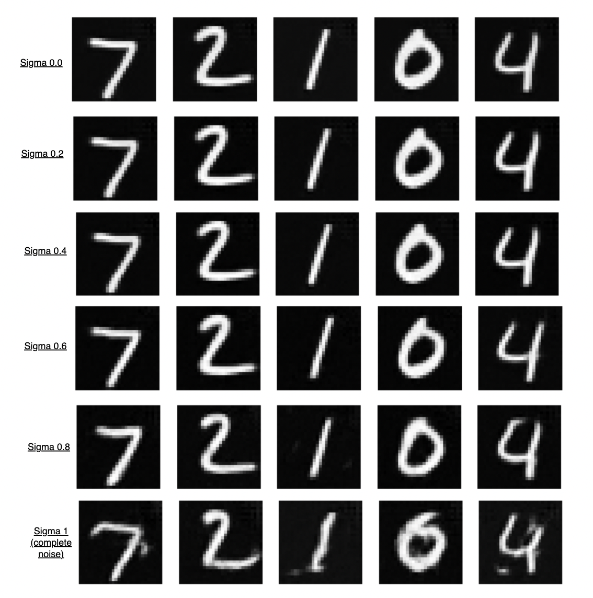
OOD denoising results at unseen noise levels.
To turn denoising into a generative task, we would like the model to be able to denoise pure random Gaussian noise. This can be viewed as starting from a blank canvas, where \( z = \epsilon \) and \( \epsilon \sim \mathcal{N}(0, I) \), and then denoising it to obtain a clean image.
Below is the training loss curve for the denoising model:
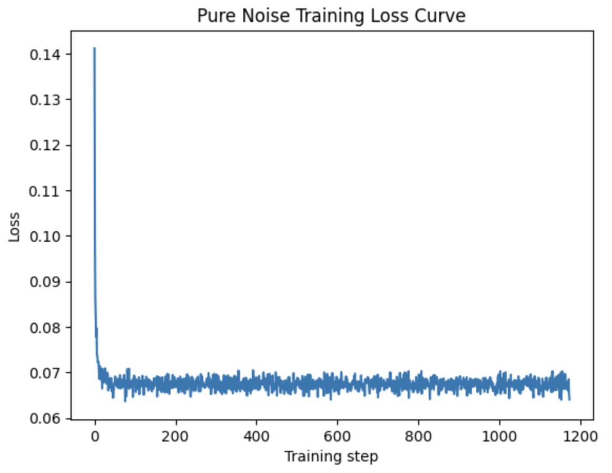
>Training loss curve for the single-step denoising UNet.
Below are samples generated by denoising pure Gaussian noise:
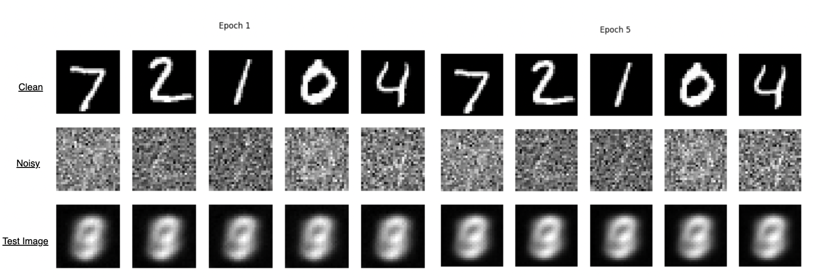
Images generated by denoising pure noise.
Observations
When trying to generate images from pure noise, the model does not do a good job of producing clear, recognizable digits. However, the generated outputs often contain rounded or curved shapes, which resemble digits such as 0, 5, 6, 8, and 9. This happens because the model was trained only as a single-step denoiser and not as a full generative diffusion model. During training, it learns to map noisy images back toward the average structure of the training data, rather than learning how to iteratively refine pure noise into a realistic sample. As a result, when starting from pure Gaussian noise, the model tends to produce blurry, averaged features that reflect common patterns in the dataset. Since many MNIST digits contain curved strokes, these features dominate the outputs, while sharper, digit-specific details fail to emerge. In other words, the model is minimizing reconstruction loss by predicting a "mean-like" digit structure rather than sampling from the true data distribution. Without iterative denoising steps or a noise-conditioned objective, the model lacks the ability to generate diverse and well-formed digits from pure noise.
One-step denoising does not work well for generative tasks. Instead, we need to iteratively denoise images using flow matching. In this approach, we train a UNet to predict the flow from noisy data to clean data, allowing us to gradually transform noise into realistic images.
Intermediate noisy samples are generated using a linear interpolation between pure noise and clean images:
Flow can be interpreted as the velocity of this transformation, describing how the data moves through space over time:
Here, I implement a time-conditioned UNet and inject timestep information following the architecture shown below.
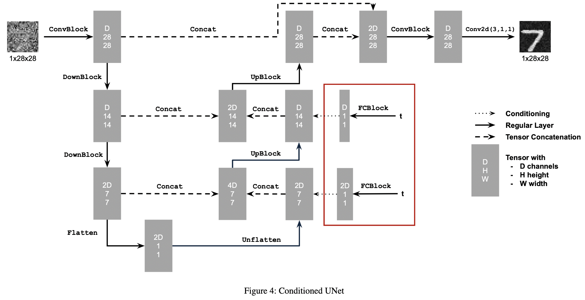
Time-conditioned UNet architecture used for flow matching.
The training procedure follows the procedure below:
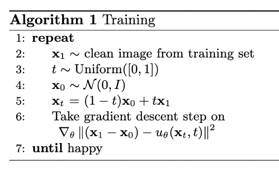
Training algorithm for flow matching.
We train a time-conditioned UNet to predict the flow given a noisy image and a timestep. Training is performed on the MNIST training set only, using a batch size of 64, and noise is added when batches are fetched from the dataloader. The model uses a hidden dimension of \( D = 64 \), follows the architecture described above for injecting timestep conditioning, and normalizes the timestep before embedding it. Here I used Adam optimizer with an initial learning rate of \( 10^{-2} \), along with an exponential learning rate decay applied after each epoch.
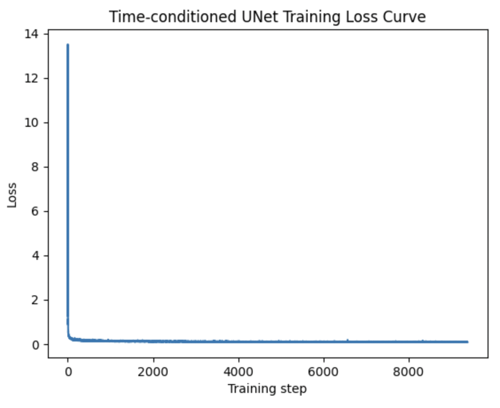
Training loss curve for the time-conditioned UNet.
This is the sampling procedure used:
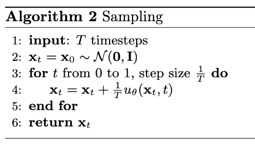
Sampling procedure used for the time-conditioned UNet.
Below are images sampled from the UNet after 1, 5, and 10 epochs of training.
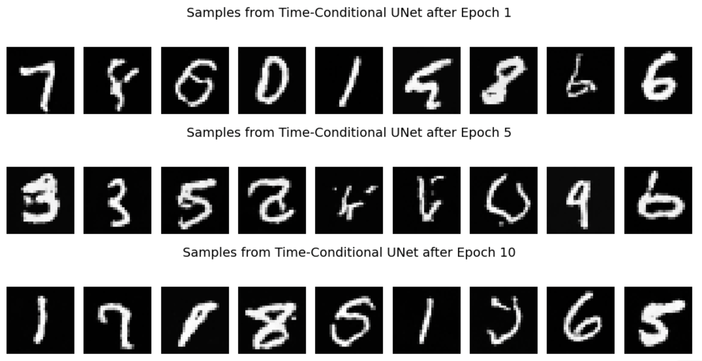
Samples generated after 1, 5, and 10 epochs.
To improve sample quality and provide finer control over image generation, we extend the UNet to condition on the digit class (0 to 9). We represent the class-conditioning signal as a one-hot vector and inject it into the network using additional fully connected layers, alongside the time-conditioning signal.
To preserve the models ability to generate images without class information, we apply classifier-free dropout by randomly removing the class-conditioning signal 10% of the time during training. This allows the model to learn both conditional and unconditional behaviors and enables classifier-free guidance at sampling time, giving us explicit control over which digit is generated.
Training is similar to the time-conditioned setup, with the main difference being the inclusion of the class-conditioning vector and periodically performing unconditional generation during training.
The overall training procedure is summarized below:
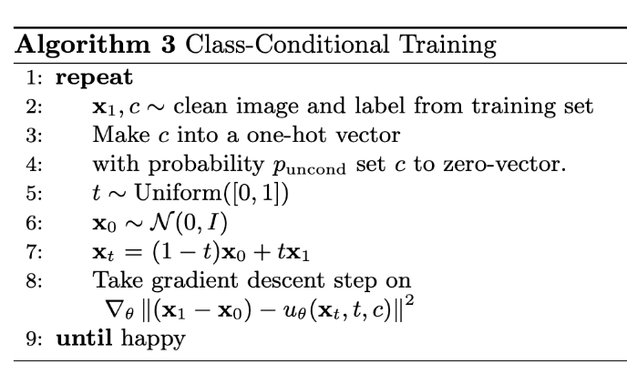
Training procedure for the class-conditioned UNet.
The training loss curve is shown below:
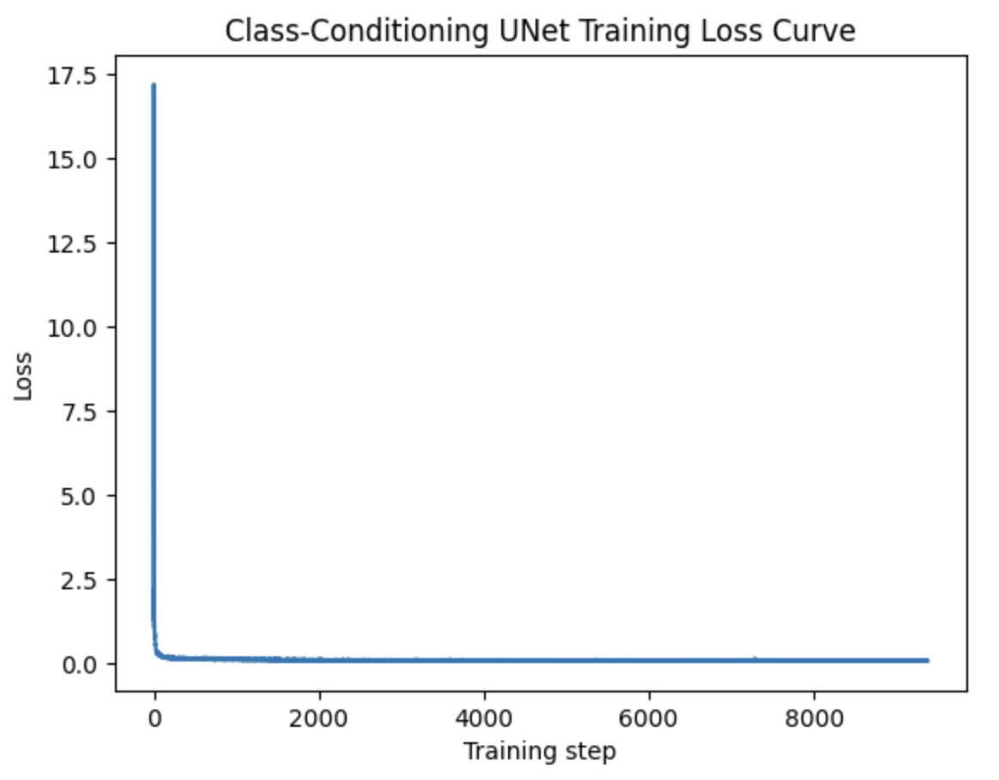
Training loss curve for the class-conditioned UNet.
Here, we sample images using class-conditioning and apply classifier-free guidance with \( \gamma = 5 \).
Below are samples generated at epochs 1, 5, and 10.
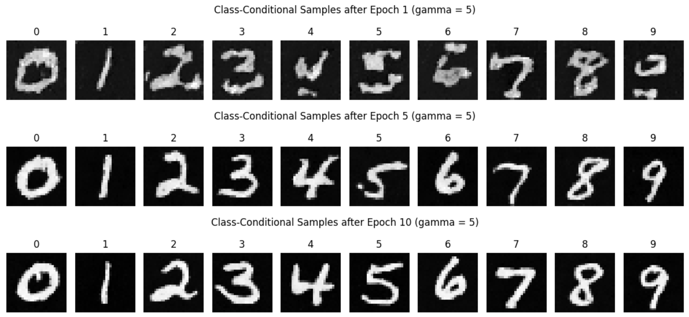
Class-conditioned samples generated at different training epochs.
To simplify training, we remove the exponential learning-rate scheduler and instead use a fixed learning rate of \( 1 \times 10^{-3} \). This lower base learning rate compensates for the lack of decay by maintaining stable optimization throughout training. Even without the learning rate, we were able to get good results in the under 10 epochs.
Empirically, we observe comparable convergence behavior and sample quality, while significantly reducing implementation complexity.
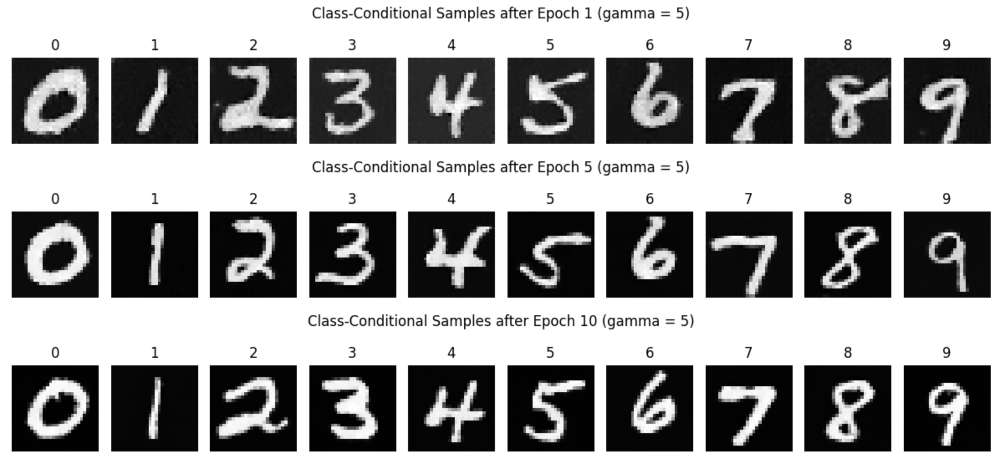
Results obtained without using a learning-rate scheduler.